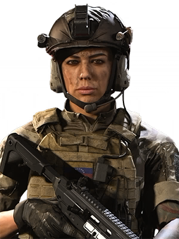

CHARACTER INFORMATION

Not much is known about Mara's early life in Venezuela. She was recruited as a CIA asset at the age of 15 and provided intel on Al-Qatala sleeper cells in the country.
At some point, Mara volunteered for US Special Force training. She continued working for the CIA and conducted clandestine operations until she was invited to join the Warcom unit of the Coalition.
On March 3, 2020, Mara was sent to Urzikstan by Lieutenant General Lyons to secure gas canisters from a crashed AQ helicopter shot down by Allegiance forces. Fighting broke out between Coalition and Allegiance operators over the payload.
Sometime after the invasion of Verdansk by Al-Qatala under the leadership of Khaled Al-Asad on March 3rd, 2020, Mara was deployed to Verdansk, Kastovia to intercept a container of ChemBio weapons. The container, however, was long gone and Mara and her team were soon ambushed by hostile forces from both Coalition and Allegiance. Mara managed to escape, but lost six of her men in the process.